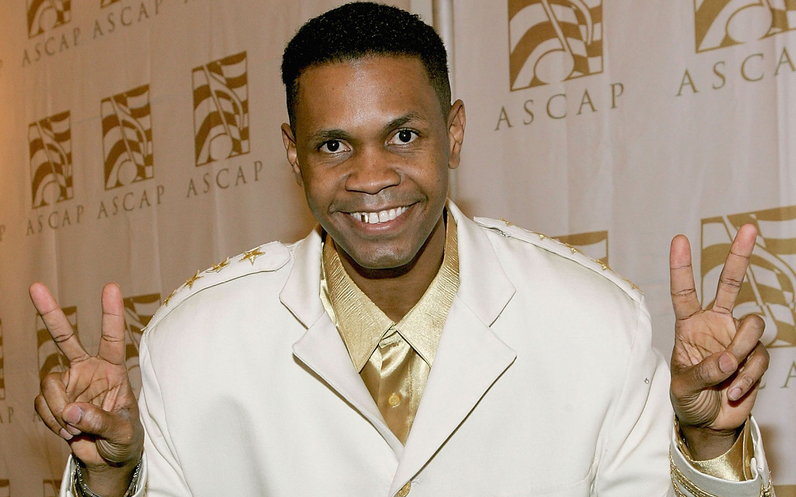
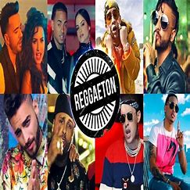

El reguetón ha logrado consolidarse como un fenómeno musical indiscutible, cautivando pistas de baile y corazones en todo el mundo. Su ritmo pegajoso y letras provocativas han revolucionado la escena musical, desafiando convenciones y conquistando nuevos horizontes. A pesar de su popularidad, ¿realmente hemos explorado a fondo la riqueza y diversidad que encierra este género? Te invito a un viaje de descubrimiento para sumergirnos en los matices y la complejidad del reguetón.
Origen y desarrollo del reggaeton
El reguetón tuvo sus orígenes en Panamá en los años 80, donde se conocía como "reggae en español".Edgardo Armando Franco -conocido popularmente como El General- fue uno de los primeros artistas en dar a conocer este estilo durante los años 90, con éxitos como "Tu pum pum" que marcaron el inicio del reguetón.De forma paralela, en Puerto Rico, el rap en español también ganaba fuerza con artistas como Vico C. Fue en Puerto Rico donde el reguetón tomó forma y se definió como un género distinto al reggae. En el año 2000, el reguetón se estableció como un género musical en ascenso, con letras que reflejaban la realidad de los jóvenes de la época.Para hacer las canciones más accesibles, se incorporaron elementos del dembow a los ritmos del reguetón. Con el paso de los años, el reguetón se convirtió en un género comercial, con artistas como Daddy Yankee, Don Omar y Tego Calderón liderando la escena.En la industria del reguetón se definieron roles clave, incluyendo letristas, cantantes, MCs y productores para los ritmos. En 2005, Calle 13 incursionó en el reguetón, mientras que Wisin y Yandel fusionaron la música electrónica con el género en 2006.Artistas como Ivy Queen, Vico C, Big Boy y The Noise han sido fundamentales en la evolución del reguetón.
El reguetón se caracteriza por sus ritmos bailables y sensuales, con líneas de bajo distintivas y fusiones de géneros que van desde el dancehall y el reggae hasta el hip hop y el rap. Este género musical ha trascendido fronteras y continúa creciendo, conquistando oyentes de todo el mundo con su energía contagiosa y su diversidad musical.
En la actualidad, el reguetón ha evolucionado y se ha fusionado con otros géneros musicales como el trap, el pop y el EDM, dando lugar a nuevos estilos como el reguetón pop y el reguetón urbano. Artistas como J Balvin, Bad Bunny, Ozuna, Karol G y Anuel AA son algunos de los representantes más destacados de esta nueva generación de reguetoneros que están conquistando las listas de música y los escenarios internacionales.
En resumen, la evolución del reguetón ha sido constante a lo largo de los años, adaptándose a los cambios musicales y culturales de cada época, pero sin perder su esencia y su carácter bailable y urbano.